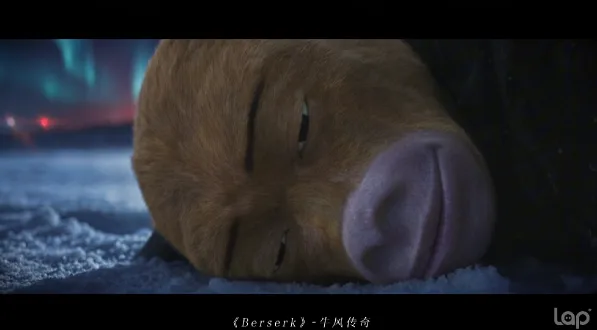
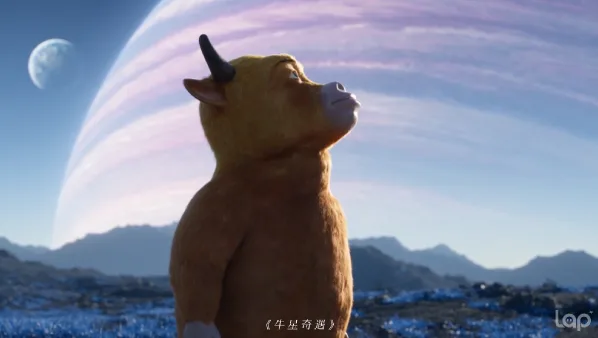
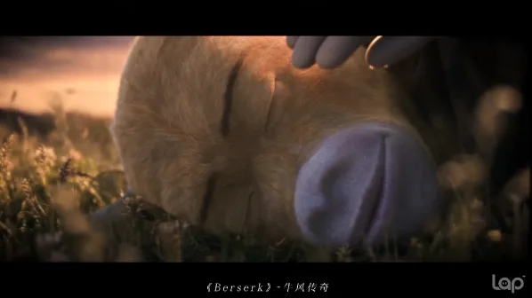
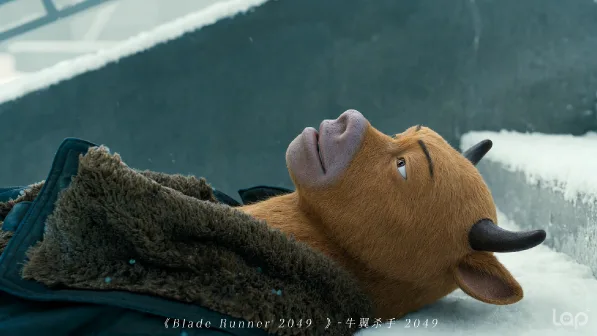

The Niulai Universe
Short films that reimagine familiar scenes.
Niulai: An Adaptation
Short filmOriginal production notes · Chinese
选题与设定
牛来改编
结合领导想法关联牛来的热点流量：
做法：经典影视桥段＋能快速带来情感张力的改编片段（剑风传奇）






Short films that reimagine familiar scenes.
Original production notes · Chinese
牛来改编
结合领导想法关联牛来的热点流量：
做法：经典影视桥段＋能快速带来情感张力的改编片段（剑风传奇）



